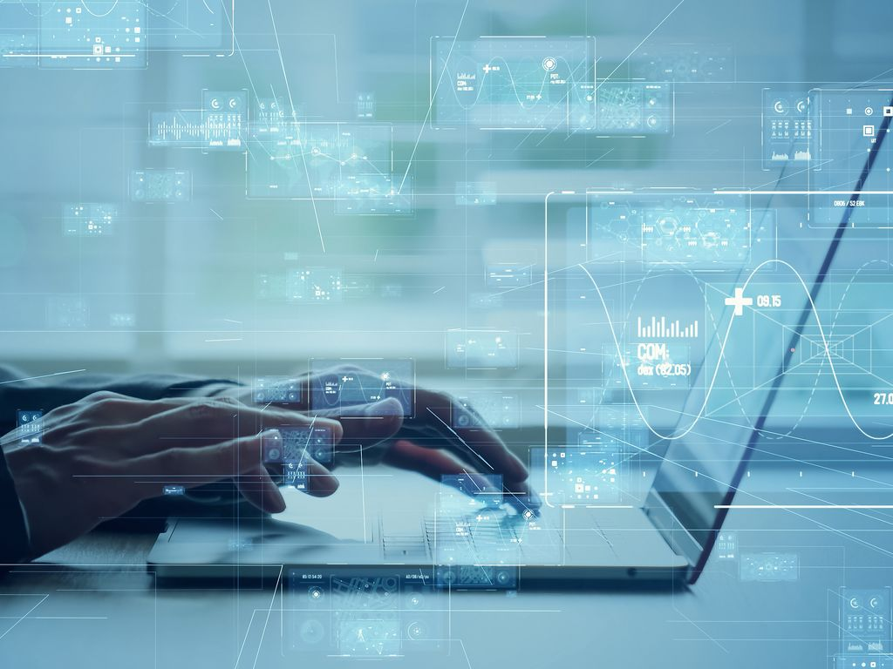
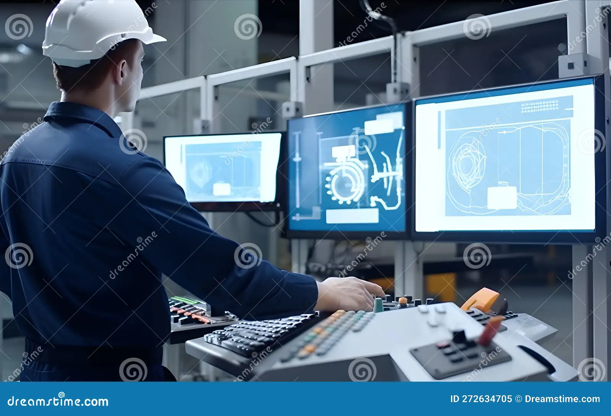

Topik Utama: Informatika & Mekatronika

Informatika merupakan disiplin ilmu yang berfokus pada pengolahan data dan informasi menggunakan sistem komputasi. Di era Revolusi Industri 4. saat ini, Informatika bukan sekadar mempelajari komputer secara fisik, melainkan menjadi tulang punggung bagi inovasi teknologi di berbagai sektor kehidupan, termasuk industri manufaktur.
Sebagai seseorang yang mendalami bidang Mekatronika, memahami ilmu Informatika adalah sebuah keharusan. Jika mekanik dan elektronik bertindak sebagai "tulang" dan "otot" dari sebuah mesin atau robot, maka Informatika (melalui pemrograman dan algoritma) berperan sebagai "otak" yang mengatur bagaimana mesin tersebut bergerak, mengambil keputusan, dan beroperasi secara cerdas tanpa campur tangan manusia.
Fokus Utama Kolaborasi Informatika & Mekatronika:
-
Software & Control Engineering:
Proses merancang perangkat lunak yang tidak hanya berupa aplikasi web/mobile,
tetapi juga sistem kontrol industri dan antarmuka mesin (HMI - Human Machine Interface).

-
Internet of Things (IoT):
Mengintegrasikan perangkat keras fisik seperti sensor, aktuator, dan mikrokontroler
(misalnya Arduino atau PLC) ke jaringan internet. Ini adalah kunci dari
Smart Manufacturing
di mana mesin dapat saling berkomunikasi satu sama lain secara
real-time.

-
Data Science & AI:
Mengolah data yang ditangkap oleh sensor mesin dalam skala besar untuk keperluan
predictive maintenance
(mendeteksi kerusakan sebelum terjadi), serta menciptakan sistem robotik yang
dapat belajar beradaptasi dengan lingkungannya melalui Machine Learning.

-
Cybersecurity (Keamanan Siber):
Dengan semakin banyaknya mesin yang terhubung ke internet,
melindungi infrastruktur industri, jaringan IoT, dan data operasional dari
ancaman peretas menjadi sangat krusial.

Prospek ke Depan
Menguasai dasar pemrograman web seperti HTML, CSS, dan PHP seperti pada website ini merupakan langkah awal yang sangat baik. Ke depannya, keahlian ini dapat diaplikasikan untuk membuat sebuah dashboard web-based yang berfungsi untuk memonitoring dan mengendalikan robot atau sistem otomatisasi dari jarak jauh.